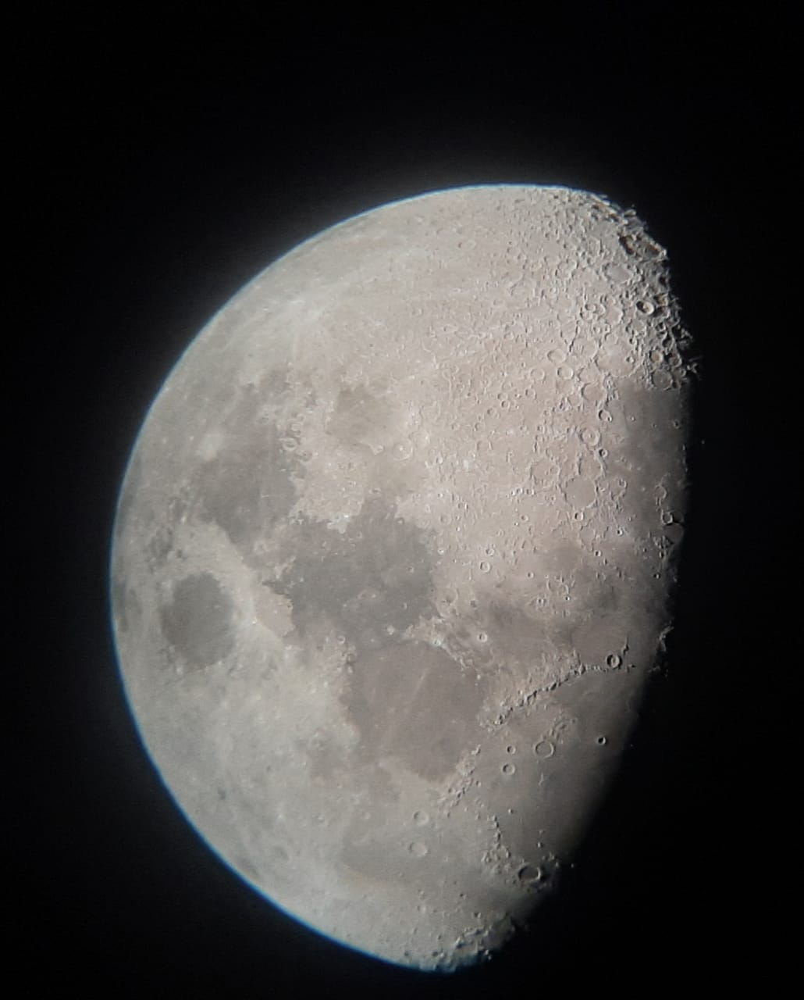
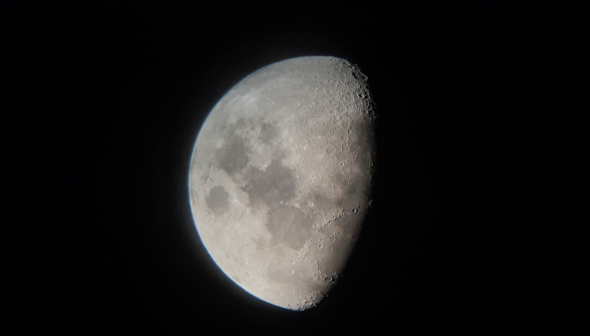
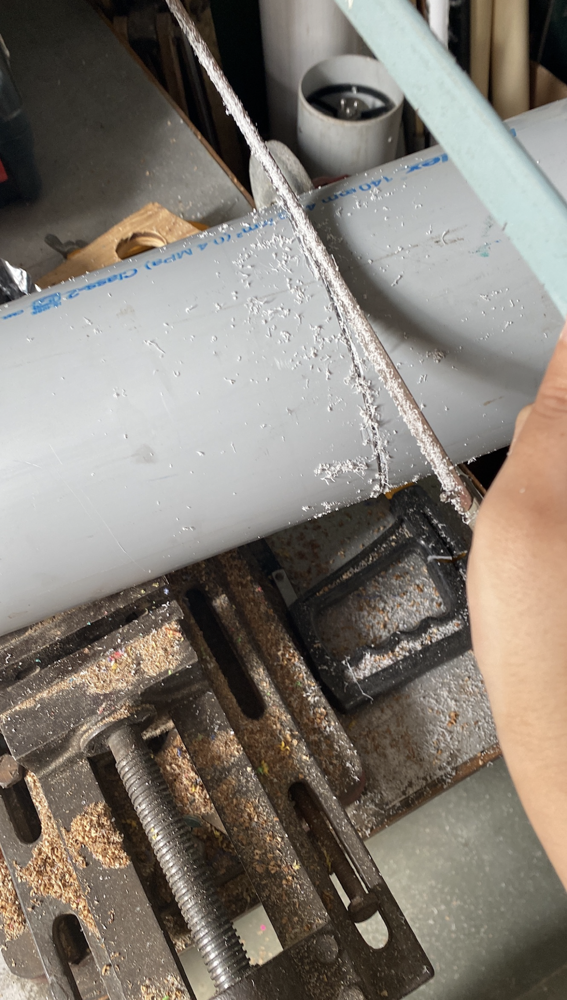
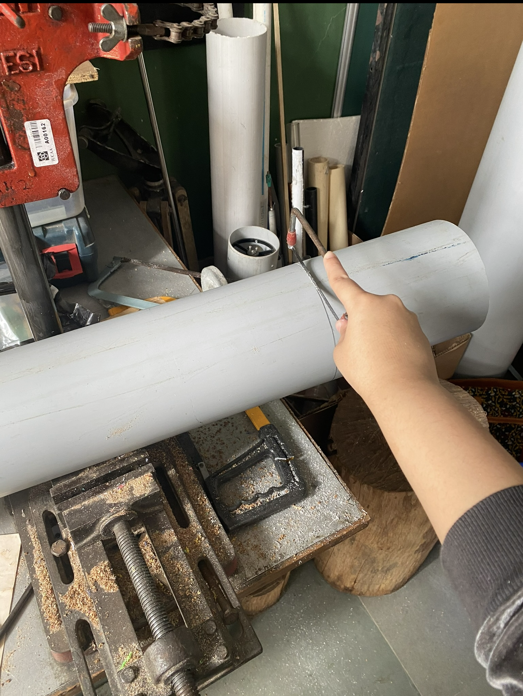
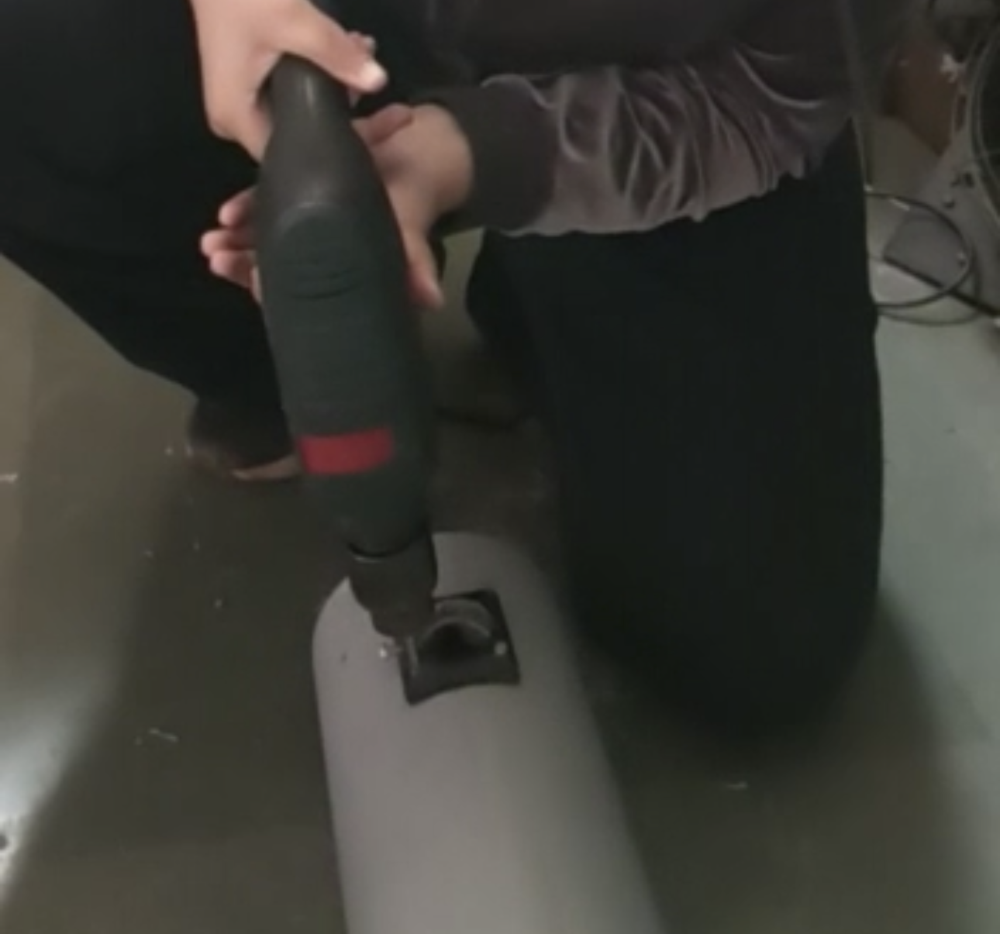
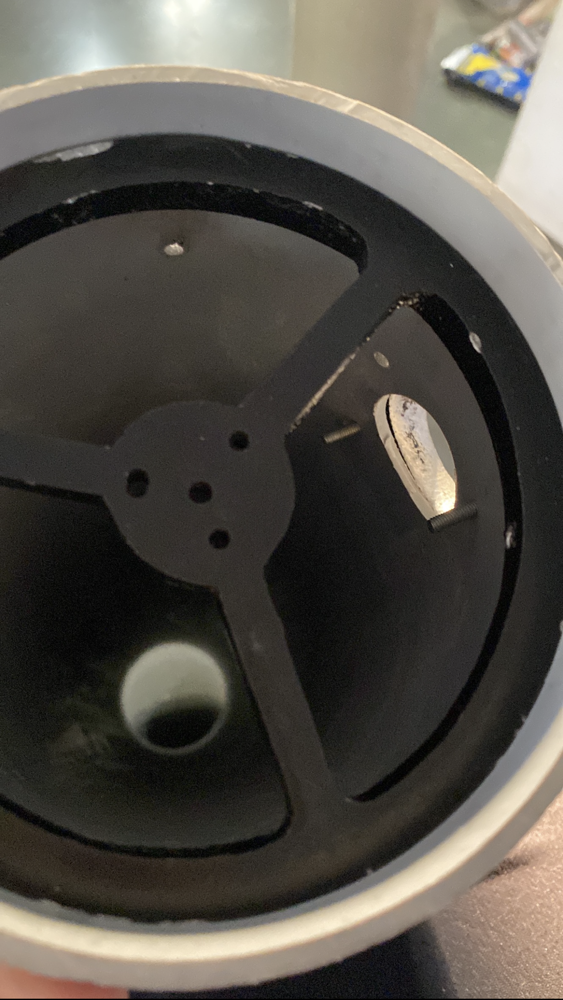
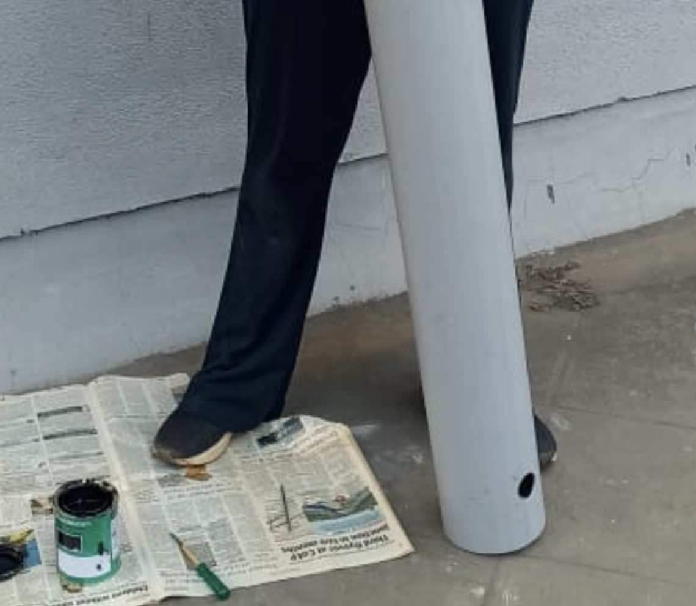

01
The Moon


02
Building the Telescope





ABOUT THE PROJECT
From PVC Pipe
to the Moon.
This project explores how everyday materials can be transformed into a functional astronomical instrument. The telescope was constructed using PVC pipe and optical components and was successfully used to observe the Moon.